The native UI
for Apple Containers
Orchard is a native macOS app for Apple's container tooling. Manage containers and machines, bridge local AI models into them, and run agents in isolated sandboxes, all without dropping to the CLI.
brew install orchard
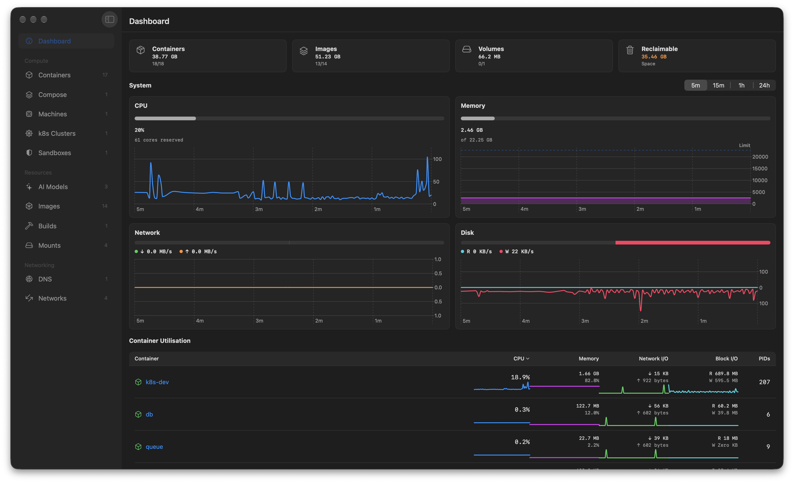
Built for the desktop:fast, focused, native
No Electron, no web views. Orchard is a native Swift app that keeps itself up to date via Sparkle, with signed updates delivered in place.
Container management
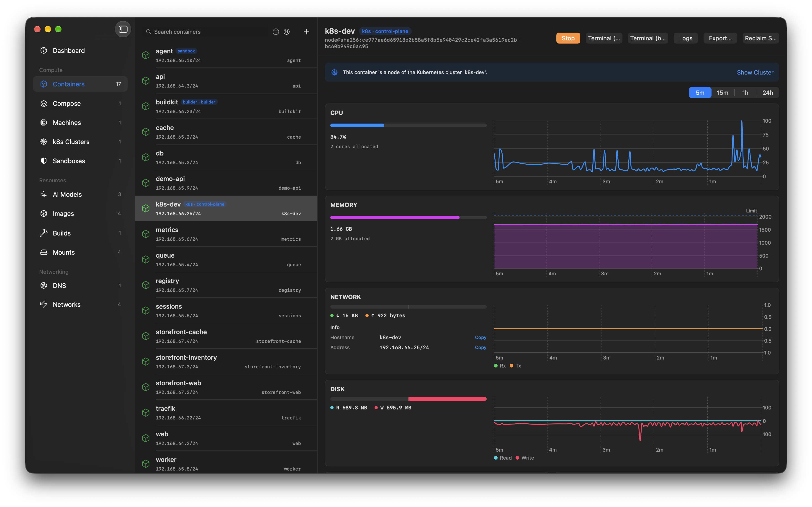
Create, start, stop, force-stop and delete containers, with live status and sortable lists.
Container machines
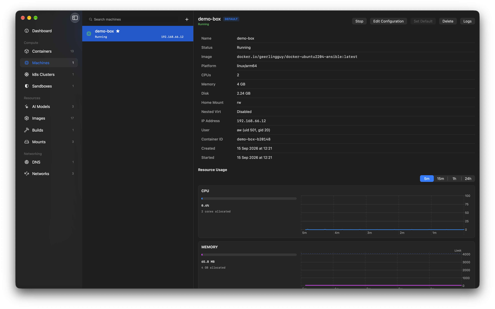
Create, run and monitor persistent Linux VMs, with a stop → apply → restart config editor and init-system guardrails. Learn more →
Kubernetes clusters
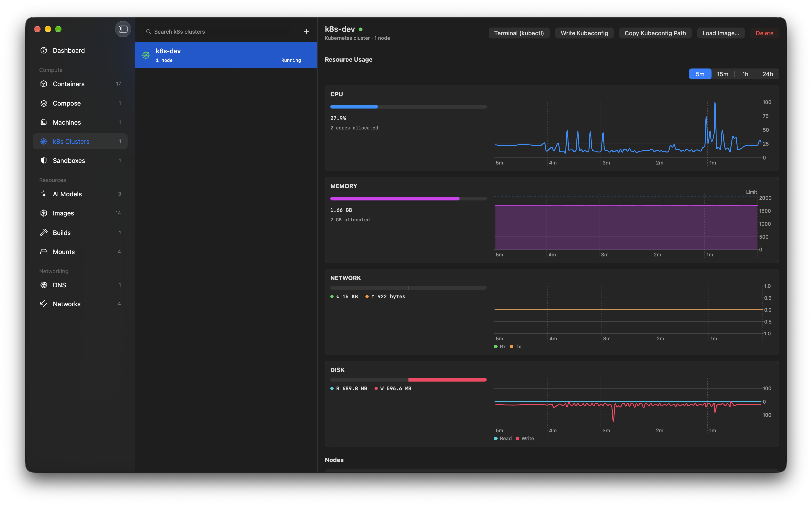
Create and manage local k8s clusters on the container runtime, load local images into them, and open a kubectl-ready terminal. Learn more →
Local AI models

Discover MLX, Ollama and LM Studio servers on your Mac - or run your own - and bridge them into containers. Inference stays on the Apple GPU. Learn more →
Sandboxes

A sandbox is a container wired to a local model on a host-only network: it can reach the model but not the internet, with a kill-switch when you're done. Learn more →
Command palette
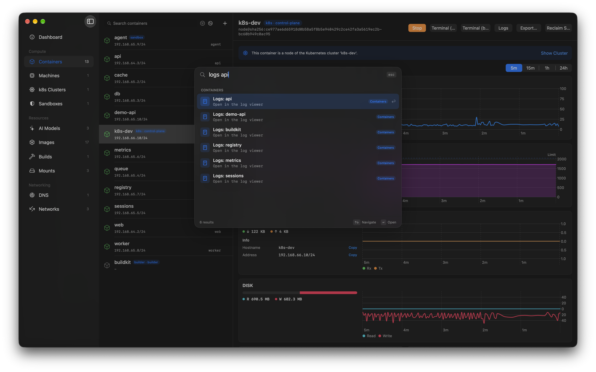
Cmd+K fuzzy-searches every resource and runs actions from the keyboard - "stop db", "logs api", "console web".
Image management
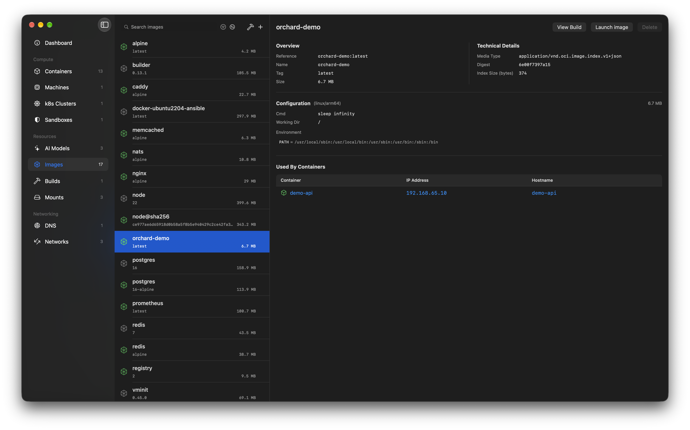
Pull, delete and search Docker Hub directly, and run containers straight from an image.
Multi-pane logs
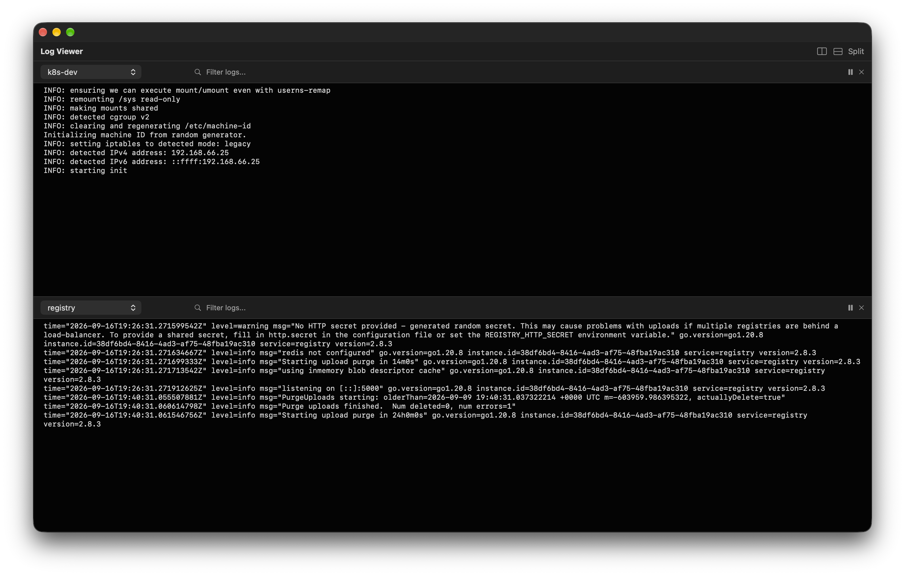
Stream logs from several containers side by side, with split panes, filtering and per-container colour.
Networks
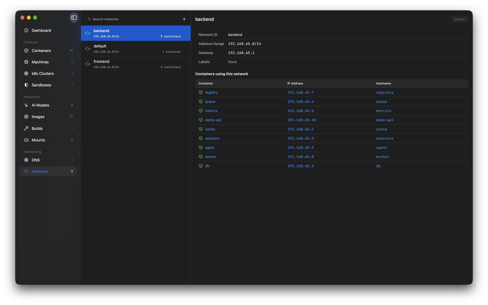
Every container gets its own IP. See addresses and hostnames per network, and create or remove networks from the app.
DNS domains
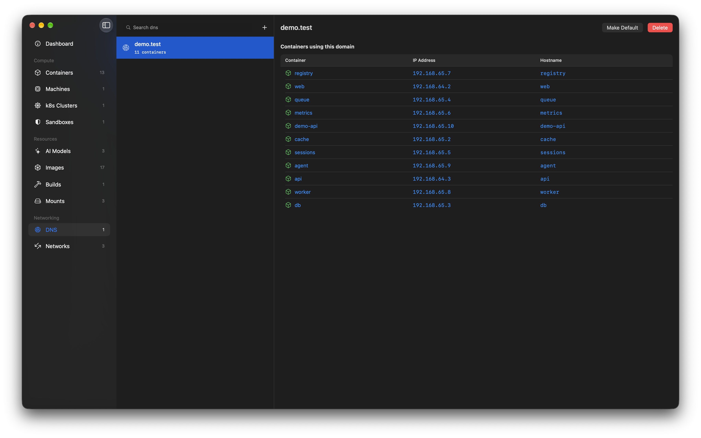
Give containers real hostnames. Set the default DNS domain and add or remove domains without root gymnastics.
Mounts
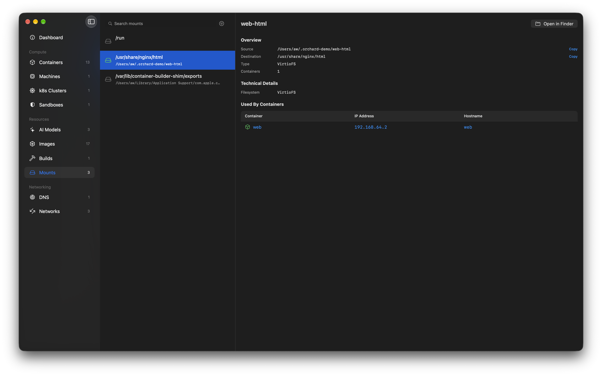
See which host paths and volumes each container mounts, and jump straight to them in Finder.
Menu bar
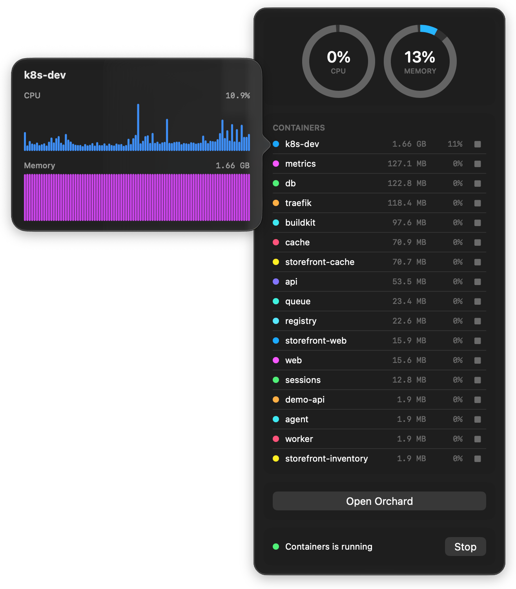
CPU and memory rings across running containers, per-container start/stop controls, and one-click access back to the app.
Live stats
Watch CPU, memory, disk and network usage in real time, with sortable columns.
Get startedin minutes
Every release is code-signed with a registered Apple Developer ID and notarised by Apple, so it installs cleanly with no Gatekeeper warnings.
Recommended
Homebrew
brew install orchard
From source
Build it yourself
Clone the repo and open Orchard.xcodeproj in Xcode - dependencies resolve automatically.
Requires macOS 26 (Tahoe) and Apple Container installed.